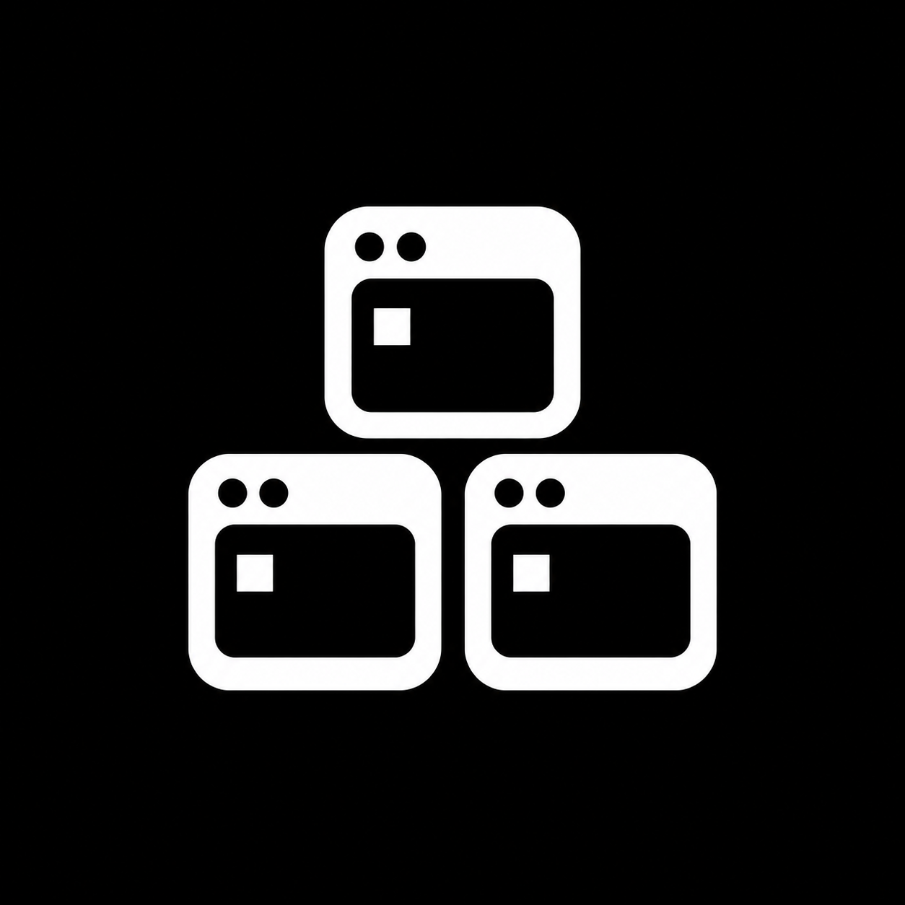
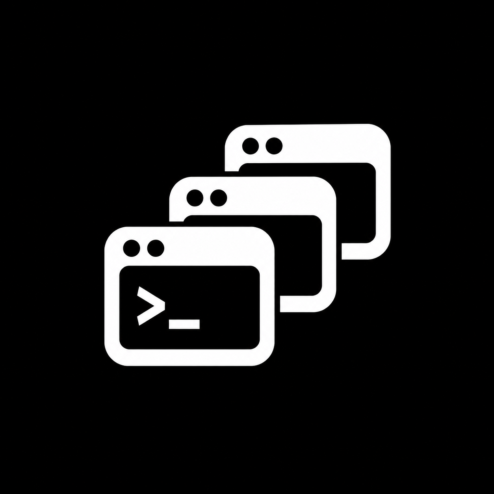
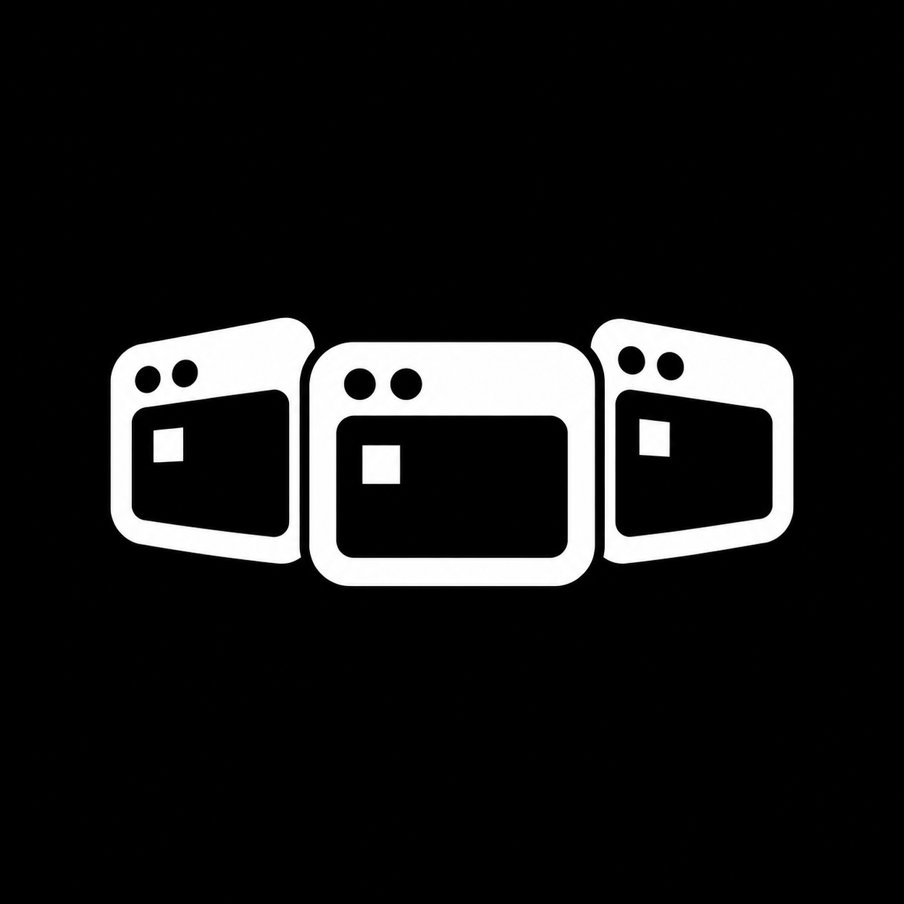
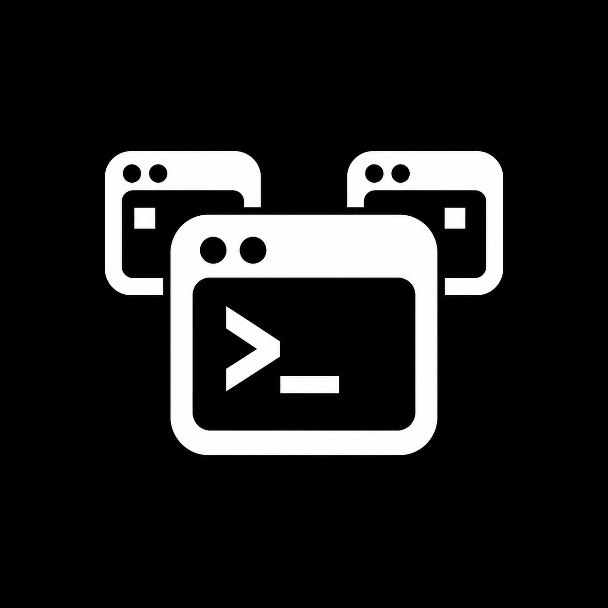
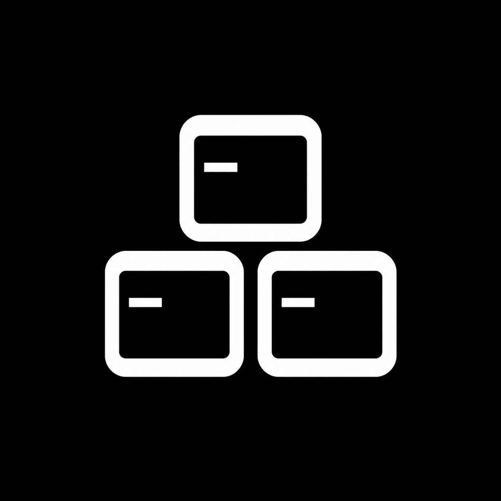

01 / Piramide refinada
02 / Janelas sobrepostas
03 / Lado a lado
04 / Terminal principal
05 / Geometrica minimalistaClique em uma imagem para abrir o arquivo original.

01 / Piramide refinada
02 / Janelas sobrepostas
03 / Lado a lado
04 / Terminal principal
05 / Geometrica minimalista